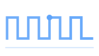
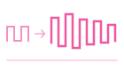
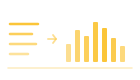
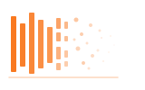
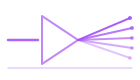

Open Source
Eno State ZX

1-bit ZX Spectrum beeper synth. Four engines built from Z80 assembly first principles, then ported to Rust as a VST3/CLAP plugin. Same algorithms, same tone tables, same sound.
Study
Every project learns through music and games, then applies at work.
| Project | ML Area | Audio | Finance |
|---|---|---|---|
| akesi | Classic ML, multi-agent RL | — | Regression, clustering, PCA |
| beepers | 1-bit synthesis, Z80 → Rust, MCP, RAG | Waveform fundamentals | Signal processing, knowledge engineering |
| bloom | GAN, domain translation | Chiptune → production | Stress testing, synthetic data |
| chant | LoRA, fine-tuning | Text → music | Model customisation |
| drift | Diffusion, U-Net | Generative audio | Synthetic data generation |
| lipu | TD learning, deep RL, distillation, quantisation | — | Sequence optimisation, edge deployment |
| prism | VAE, cross-modal | Melody ↔ visual | Fraud detection, segmentation |
| signal-hunt | CNN, RNN, classification | Sound recognition | Pattern detection in transactions |
| TPP | Transformers, RAG, evals | — | LLM tooling, quality gates |
AI Study Tree
-
Machine Learning
- Classic ML akesi regression, trees, boosting, SVM, k-means, PCA
-
Deep Learning
- Foundations signal-hunt tensors, backprop, optimisers, regularisation
-
Architectures
- CNN signal-hunt
- RNN / GRU / LSTM signal-hunt
- Transformer TPP
- Diffusion drift
- U-Net drift
- Autoencoder / VAE prism drift VAE, latent spaces, representation learning, cross-modal mapping
- GAN bloom CycleGAN, domain translation, style transfer
- GNN
- Training signal-hunt lipu augmentation, transfer learning, curriculum, distillation, INT8 quantisation
- Fine-tuning / LoRA chant LoRA, text conditioning, RLHF, dataset curation
- Generation drift noise schedules, classifier-free guidance, DDIM
- Evaluation signal-hunt metrics, loss curves, ROC/AUC, perceptual loss
- Reinforcement Learning
-
AI Agents
- LLM Engineering TPP beepers embeddings, FAISS, RAG, MCP server (Rust), ONNX semantic search, evals
- Conversational AI akesi LLM chatbot, grounded generation, prompt engineering
- Agent Memory graph memory, entity resolution, temporal decay
- LLM-as-Debugger structured diagnosis, retry loops, debug context
- Domains
-
Production / MLOps
- Inference pipeline signal-hunt
- Edge deployment lipu ONNX export, WASM (6.5 µs), INT8 quantisation (Z80), Flutter
- Model serving
- Monitoring / A/B testing
Audio & Music Labs

Beepers
Learn what a waveform is by building one from a single bit. Four beeper engines built from Z80 assembly first principles, then ported to Rust as a VST3/CLAP plugin (Eno State ZX). Plus a full knowledge engineering stack — Rust MCP server with keyword and ONNX semantic search, FAISS embeddings, and a curated Z80/Spectrum/WASM corpus.

Bloom planned
Chiptune to full production via GAN domain translation. Treat spectrograms as images and learn to map from the 1-bit beeper domain to modern multi-track arrangements.

Chant
Text-to-chiptune via LoRA fine-tuning. Describe a chip-tune in plain English and a fine-tuned language model generates note sequences that beepers can play. 0.23% of parameters retrained, trains in 35 minutes on CPU. Includes a Rust MIDI host that renders output through the beeper synth engine.

Drift
Generating chip-tune music from noise using diffusion models. Trained on 54,000 spectrogram segments across four chip architectures (SID, AY, SN76489, MOD). Starts from pure noise and denoises into playable audio.

Prism planned
Cross-modal learning — training a VAE to compress melodies into a meaningful latent space, then mapping that space to visual parameters (colour, energy, motion). Inspired by chromesthesia.
Signal Hunt
Audio classification from first principles. Four phases: data pipeline, sound-type CNN (100% accuracy), piano note classifier (89.5%), and chord detection (96.2%). Browser demo via ONNX Runtime WASM.